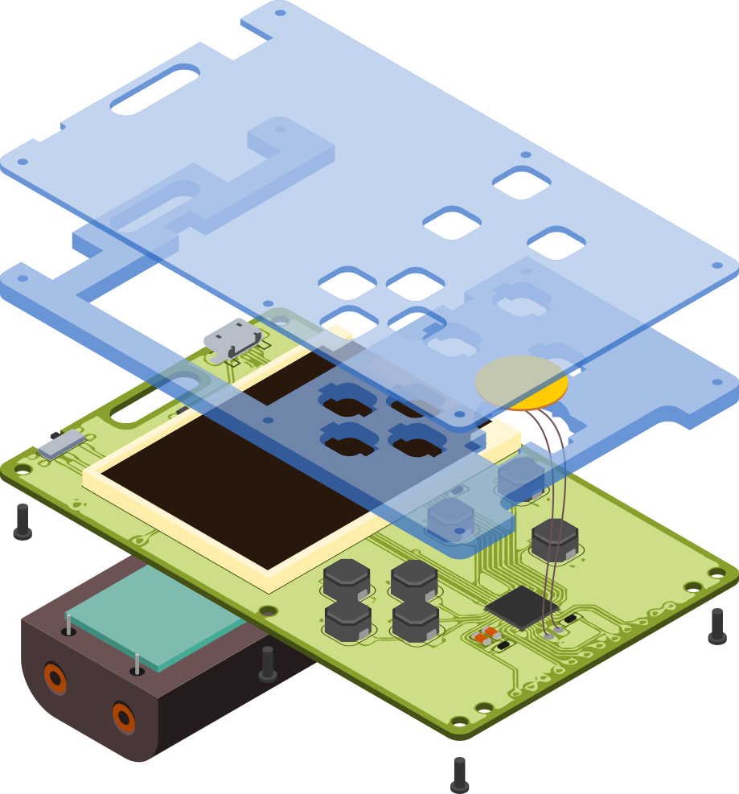

Eye Candy¶
Published on 2019-08-27 in PewPew M4.
I’m still waiting for the order from @Elecrow — it’s taking longer than normal, probably because of the non- standard 1mm acrylic. In the mean time, I decided to work a little bit on the assembly instructions for the manual. I could make a rendering in OpenSCAD or FreeCAD, or even in Blender, but in my experience rendering are never as clean as pictures — they have too many irrelevant details. So I decided to just draw it all in Inkscape, using Fritzing’s SVG exports and the cool features Inkscape has for the isometric view. Here’s the result:
The colors are artificial, to make the drawing easier to parse — in reality all the parts are either white, black or transparent. The wires for the piezo speaker are also too long — but that was the only way to show how they have to pass through the hole in the middle part of the case.